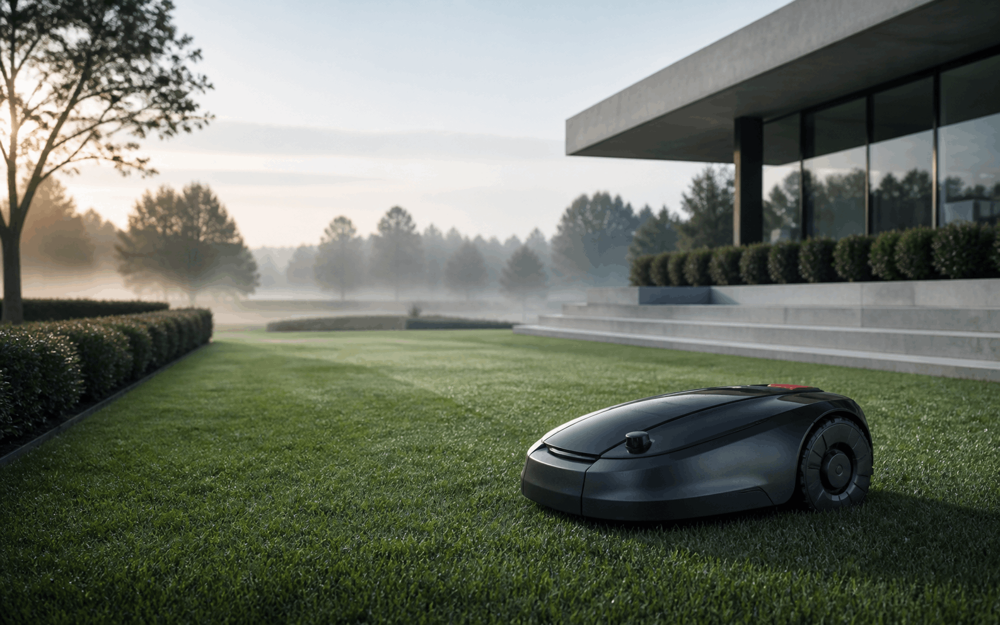
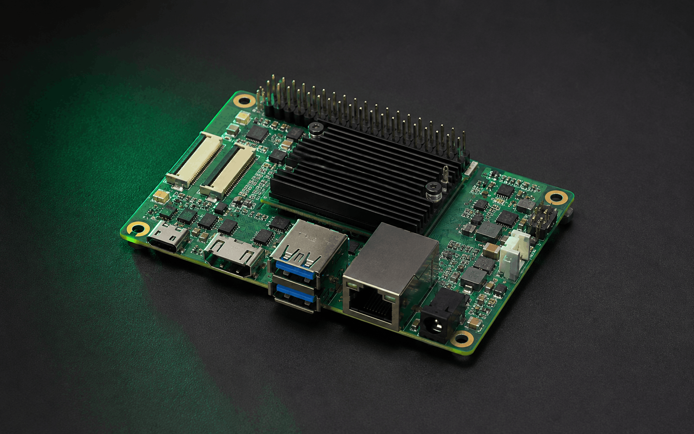
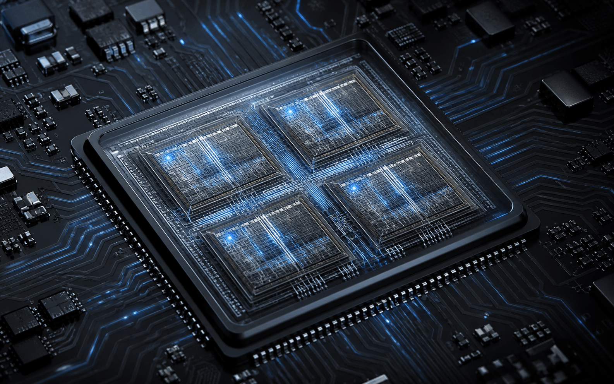
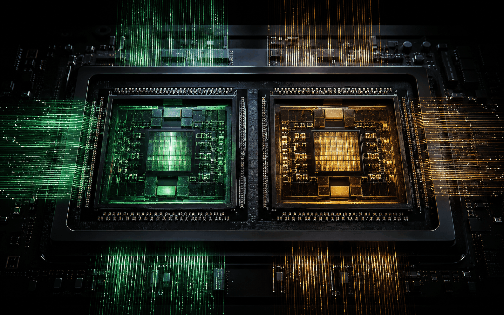
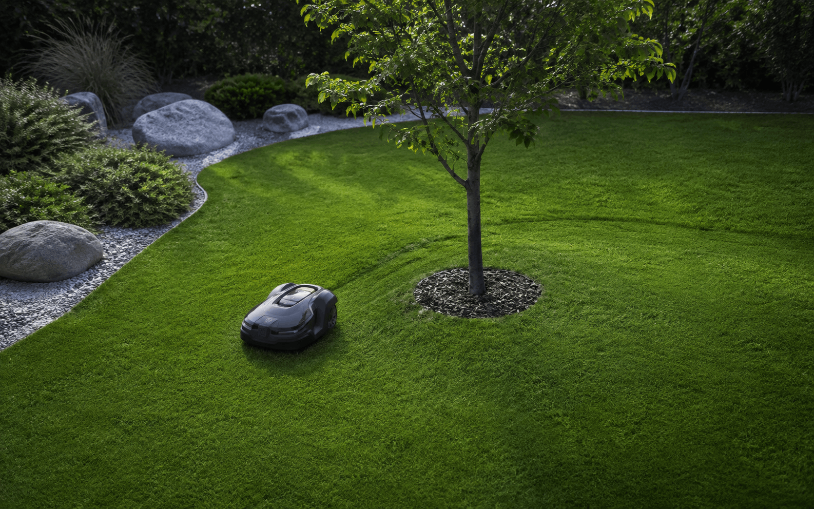
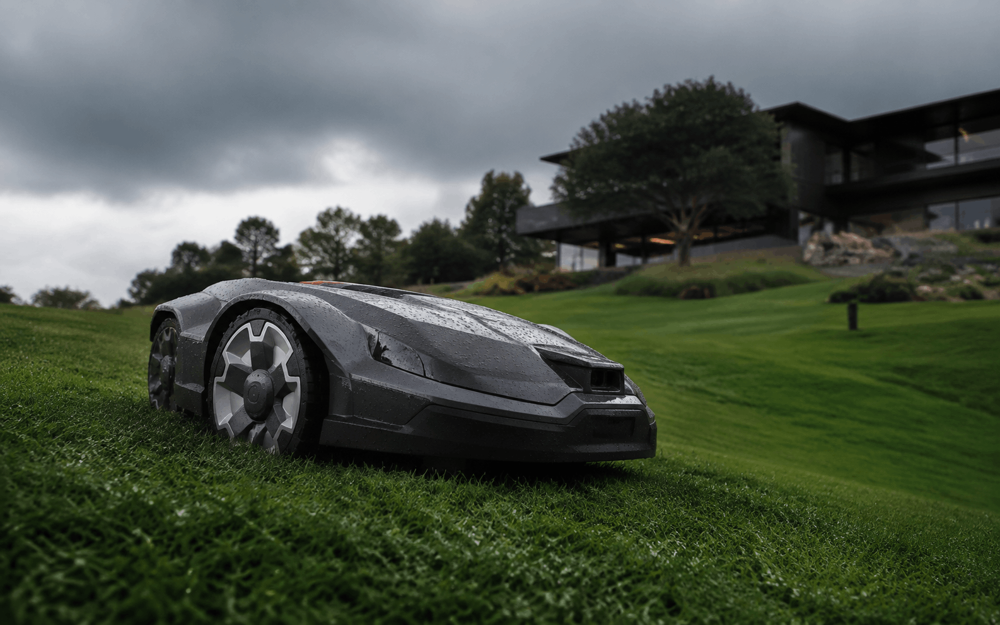

PROJECT 01 · AUTONOMOUS MOWER
自主割草机
一套面向真实庭院环境的自主机器人系统。以前视视觉为主要感知输入，在端侧完成草坪分割、障碍检测、结果融合与局部路径决策。
- 计算平台
- RDK X3
- 视觉架构
- 双 BPU 并行推理
- 项目方向
- 机器人 / 边缘 AI

01 / COMPUTING PLATFORM
RDK X3
端侧计算核心
旭日 X3 将通用计算、AI 加速与视频处理集成在一块紧凑平台中。相机数据无需上传云端，感知和决策链路都在设备侧闭环完成，降低网络依赖与响应等待。
RDK X3 官方资料 ↗
02 / CPU
四核 Cortex-A53，
承担系统调度。
四核 ARM Cortex-A53 最高运行至 1.5 GHz，负责 Linux 系统、传感器管理、双路推理任务编排，以及分割与检测结果融合。NEON SIMD 可加速图像预处理和几何运算，硬件多媒体单元进一步减少视频编解码对 CPU 的占用。
- 4 核并行处理控制、通信与规划线程
- 1.5 GHzRDK X3 当前产品规格最高频率
- NEON向量化图像预处理与矩阵计算
- Linux支持 Ubuntu 20.04 / 22.04

03 / BPU
双核 Bernoulli，
让视觉并行发生。
两颗 BPU 基于 Bernoulli 架构，总计提供 5 TOPS 端侧 AI 算力。项目采用单帧单核调度：每个模型固定到独立 BPU，减少高频任务之间的资源竞争，并使两条感知链路持续并行。
- BPU 0语义分割 · 生成可行驶区域 Mask
- BPU 1目标检测 · 输出类别、置信度与 Box
- 5 TOPS双核 BPU 等效峰值算力
- 隔离调度两模型独立执行，CPU 侧融合

04 / PERCEPTION DATA
一个理解地面，
一个发现目标。
分割模型给出连续空间结构，检测模型补充目标级语义。CPU 将两路输出投影到同一局部坐标系，再交给规划器生成安全路径。
CAMERA图像帧
→
逐像素区分草地、边界与不可通行区域。
- 草地区域72%
- 边界区域17%
- 不可通行11%
识别人、宠物、树木与低矮散落物。
OBSTACLE · 0.91
- 有效目标3
- 最近距离1.8 m
- 规划状态绕行
→
CPU FUSION局部地图
单帧示例数据用于说明输出结构，不代表最终模型实测指标。
05 / MODEL DESIGN
模型设计
轻量语义分割
输入前视 RGB 画面，输出像素级类别掩码。训练场景覆盖草坪阴影、强光、落叶、泥土和草石边界，重点降低复杂光照下的区域误判。
- 输出
- Pixel Mask
- 用途
- 边界 / 覆盖规划
- 部署
- BPU 0
实时目标检测
输出目标类别、置信度与边界框。训练重点包括小型玩具、石块、宠物和低矮障碍，并通过连续帧一致性抑制瞬时误检。
- 输出
- Box + Class
- 用途
- 减速 / 绕行 / 停止
- 部署
- BPU 1
06 / FIELD TEST
从感知，
走向行动。
分割结果约束可行驶区域，检测结果提供动态安全边界。规划器同时读取两路信息，在树木、石块与临时障碍间持续修正轨迹。


07 / TERRAIN
坡地与湿草，
仍然稳定通过。
视觉感知之外，底盘控制持续读取姿态与轮速信息，使转向和牵引策略适应不同地表条件。
项目仍在持续迭代。
返回首页 ↗